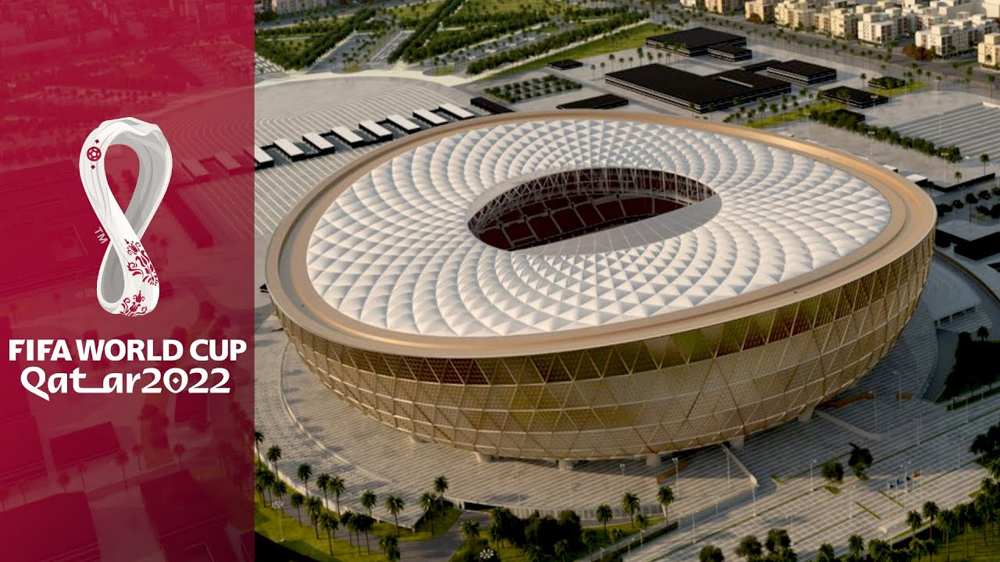

Qatar Football Stadiums & Team Groups

The 2022 FIFA World Cup will not only be the first tournament to be held in the Arab region, but it will be the most compact, allowing fans to attend more than one game a day.
With high summer temperatures, each stadium, training facility and fan zone is equipped with solar-powered cooling technology to keep the temperature at 27C. All stadiums are eco-friendly and their temperature will be controllable.
Qatar is home for less than 3 million people, so the legacy of the tournament has to be managed carefully. To that end, the tournament organizers have pledged to build stadiums with modular elements, which will be reconfigured after the tournament to provide a lasting legacy for the 2022 FIFA World Cup far beyond Qatar’s borders.
After the tournament, around 170,000 seats will be disassembled and provided to developing nations to help develop their sports infrastructure.
As many as 22 new stadiums will be created in emerging economies, and this reconfiguration will leave Qatar with stadiums between 20-25,000 seats, which are suitable for its domestic entertainment needs.😀
Stadiums in Qatar

Lusail Stadium

Al Bayt Stadium

Al Janoub Stadium

Ahmad Bin Ali Stadium

Khalifa International Stadium

Stadium 974

Education City Stadium

Al Thumama Stadium
Information on Stadiums in Qatar
Group Stages
| Group A |
Group B |
Group C |
Group D |
| Qatar |
England |
Argentina |
France |
| Ecuador |
IR Iran |
Saudi Arabia |
Australia |
| Senegal |
USA |
Mexico |
Denmark |
| Netherlands |
Wales |
Poland |
Tunisia |
| Group E |
Group F |
Group G |
Group H |
| Spain |
Belgium |
Brazil |
Portugal |
| Costa Rica |
Canada |
Serbia |
Ghana |
| Germany |
Morocco |
Switzerland |
Uruguay |
| Japan |
Croatia |
Cameroon |
Korea Republic |